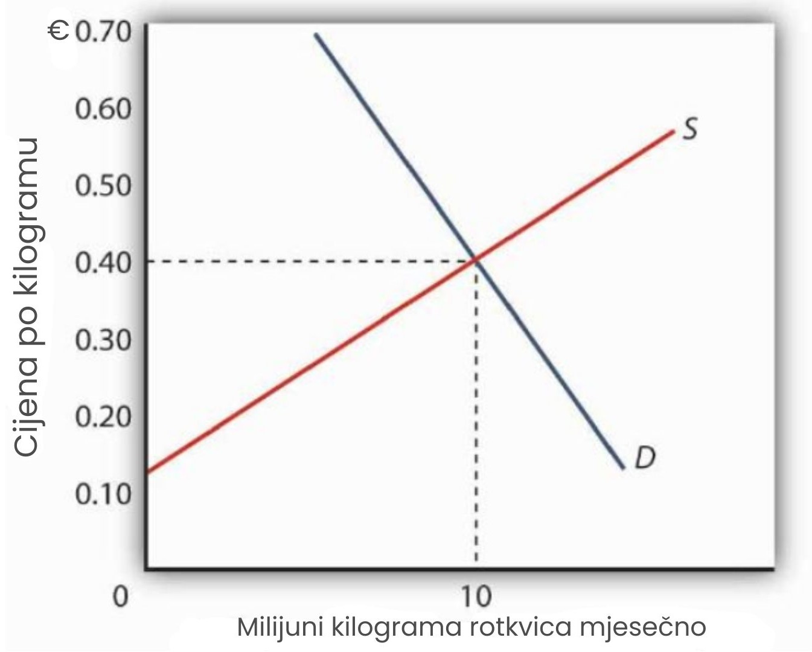
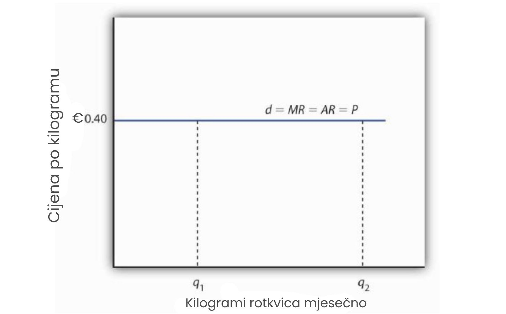
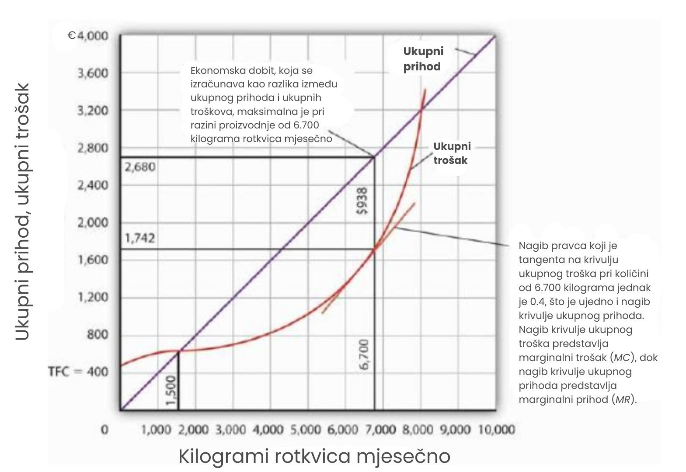
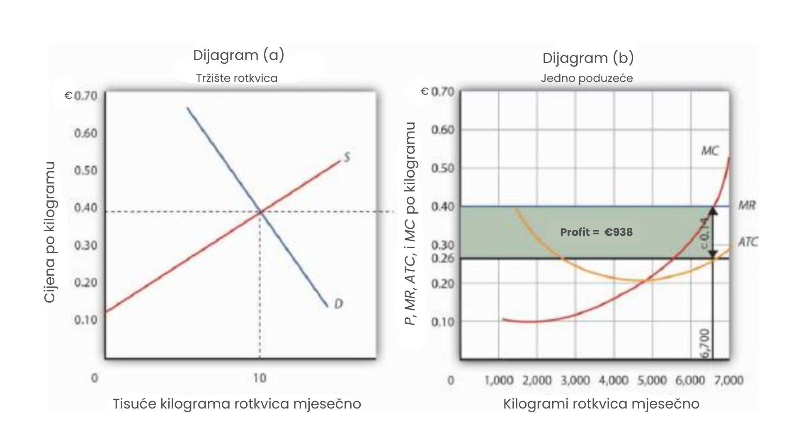
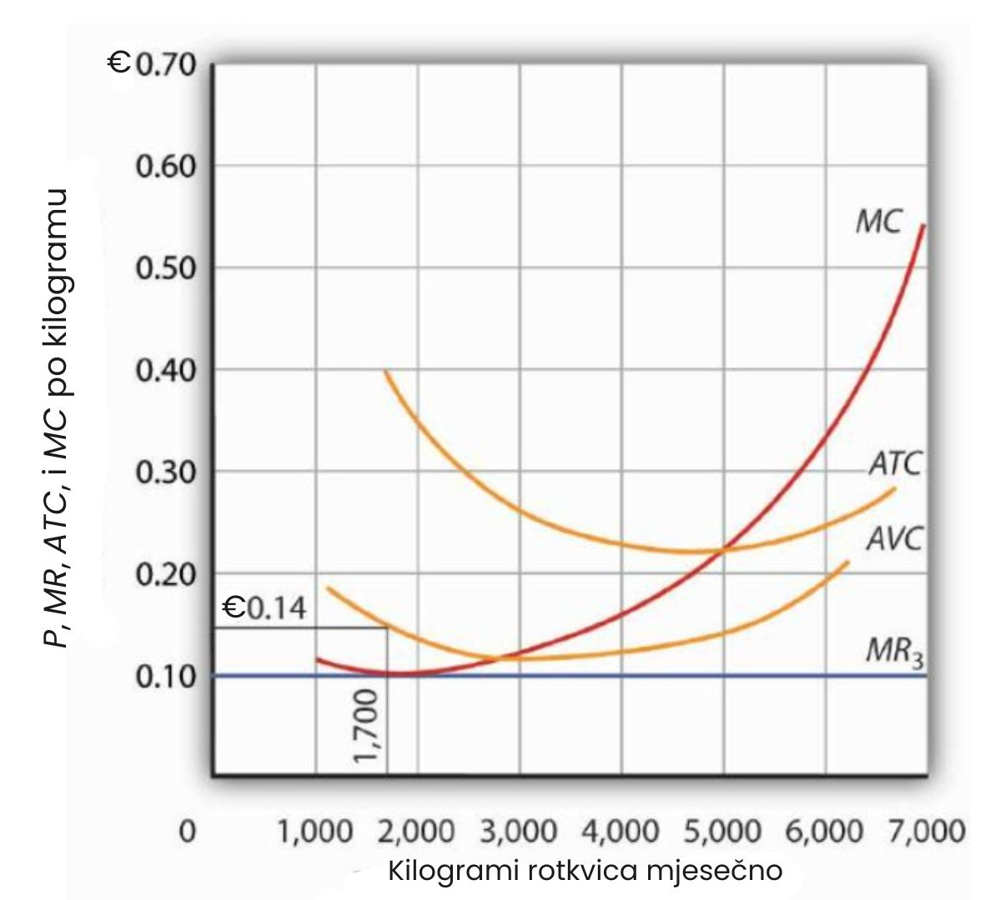

Određivanje outputa u kratkoročnom razdoblju
Naš cilj u ovom odjeljku je razumjeti kako poduzeće u savršeno konkurentnom tržištu određuje razinu proizvodnje u kratkom roku — razdoblju planiranja u kojem je barem jedan proizvodni faktor fiksan u količini. Vidjet ćemo da poduzeće može maksimizirati ekonomski profit primjenom pravila granične odluke, povećavajući proizvodnju sve dok granična korist dodatne jedinice proizvodnje ne bude jednaka graničnom trošku.
Ova činjenica ima važnu implikaciju: kroz širok raspon razina proizvodnje, krivulja graničnog troška poduzeća predstavlja njegovu krivulju ponude.
Cijena i prihod
Svako poduzeće u savršeno konkurentnom tržištu prihvaća tržišnu cijenu kao zadanu; ravnotežna cijena i ukupna industrijska proizvodnja određuju se odnosom ponude i potražnje. Na slici je prikazano kako ponuda i potražnja na tržištu rotkvica — za koje pretpostavljamo da se proizvode u uvjetima savršene konkurencije — određuju ukupnu količinu proizvodnje i cijenu.
Ravnotežna cijena iznosi 0,40€ po kilogramu, a ravnotežna količina je 10 milijuna kilograma mjesečno.
Cijena i količina u konkurentskom tržištu određuju se odnosom ponude i potražnje. Na tržištu rotkvica, ravnotežna cijena iznosi 0,40€ po kilogramu; pri toj cijeni proizvodi se i kupuje 10 milijuna kilograma mjesečno.
Budući da su poduzeća u industriji rotkvica cjenovni prihvatitelji, svako poduzeće pretpostavlja da može prodati koliko god želi rotkvica po tržišnoj cijeni od 0,40 po kilogramu. Bez obzira na to koliku količinu proizvede, poduzeće očekuje da će sve prodati po tržišnoj cijeni.
Pretpostavka da poduzeće očekuje prodaju svih svojih rotkvica po tržišnoj cijeni je ključna. Ako poduzeće ne bi očekivalo prodaju cijele količine po toj cijeni — odnosno, ako bi moralo sniziti cijenu da bi prodalo dio proizvodnje — tada ne bi bilo cjenovni prihvatitelj. A ponašanje cjenovnog prihvatitelja je temelj modela savršene konkurencije.
Uzgojivači rotkvica — kao i ostala poduzeća u savršeno konkurentnim tržištima — nemaju razlog naplaćivati cijenu nižu od tržišne. Budući da kupci raspolažu potpunim informacijama i jer pretpostavljamo da je proizvod svakog poduzeća identičan proizvodima konkurenata, poduzeća nisu u mogućnosti naplatiti višu cijenu od tržišne.
Za poduzeća u savršenoj konkurenciji, cijena je poput vremenske prognoze: mogu se žaliti na nju, ali ne mogu ništa učiniti da je promijene.
Ukupni prihod
Iako poduzeće u savršeno konkurentnom tržištu nema utjecaja na tržišnu cijenu, ono ipak odlučuje o količini proizvodnje. Pri donošenju odluke o količini, jedan od ključnih čimbenika je prihod koji će poduzeće ostvariti proizvodnjom određene količine.
Ukupni prihod poduzeća izračunava se množenjem količine proizvodnje s cijenom po kojoj se ta količina prodaje. Za poduzeće u savršenoj konkurenciji, ukupni prihod (TR) jednak je tržišnoj cijeni (P) pomnoženoj s količinom koju poduzeće proizvede (Q), odnosno:
Odnos između tržišne cijene i krivulje ukupnog prihoda poduzeća izuzetno je važan.
Cijena, granični prihod i prosječni prihod
Nagib krivulje ukupnog prihoda posebno je važan. On predstavlja promjenu na vertikalnoj osi (ukupni prihod) podijeljenu s promjenom na horizontalnoj osi (količina) između bilo koje dvije točke. Taj nagib mjeri brzinu rasta ukupnog prihoda kako se povećava proizvodnja. Možemo ga promatrati kao povećanje ukupnog prihoda povezano s povećanjem proizvodnje za jednu jedinicu. Povećanje ukupnog prihoda zbog povećanja proizvodnje za jednu jedinicu naziva se granični prihod. Dakle, granični prihod (MR) jednak je nagibu krivulje ukupnog prihoda.
Koliko dodatnog prihoda proizvođač rotkvica ostvaruje prodajom još jednog kilograma rotkvica? Odgovor je, naravno, tržišna cijena za taj jedan kilogram. Granični prihod jednak je tržišnoj cijeni. Budući da pojedinačno poduzeće ne utječe na tržišnu cijenu, granični prihod koji ostvaruje proizvodnjom još jedne jedinice uvijek je jednak tržišnoj cijeni. Krivulja graničnog prihoda prikazuje odnos između graničnog prihoda i količine koju poduzeće proizvodi. Za poduzeće u savršenoj konkurenciji, krivulja graničnog prihoda je vodoravna linija na razini tržišne cijene. Ako je tržišna cijena jednog kilograma rotkvica 0,40€, tada je i granični prihod 0,40€. U savršenoj konkurenciji, krivulja graničnog prihoda poduzeća je vodoravna linija na razini tržišne cijene.
Cijena je također jednaka prosječnom prihodu, koji se dobiva dijeljenjem ukupnog prihoda s količinom. Da bismo dobili prosječni prihod (AR), dijelimo ukupni prihod s količinom Q. Budući da je ukupni prihod jednak cijeni (P) pomnoženoj s količinom (Q), dijeljenjem s količinom dobijemo cijenu.
Krivulja graničnog prihoda je vodoravna linija na razini tržišne cijene, a prosječni prihod jednak je tržišnoj cijeni. Krivulje prosječnog i graničnog prihoda stoga su prikazane istom vodoravnom linijom. To je u skladu s onim što smo naučili o odnosu između graničnih i prosječnih vrijednosti.
Kada je granična vrijednost veća od prosječne, prosječna vrijednost raste. Kada je granična vrijednost manja od prosječne, prosječna vrijednost opada. Što se događa kada se ni prosječna ni granična vrijednost ne mijenjaju? U tom slučaju, granična vrijednost mora biti jednaka prosječnoj vrijednosti — te se dvije krivulje podudaraju.
Krivulja graničnog prihoda je vodoravna linija na razini tržišne cijene, a prosječni prihod jednak je tržišnoj cijeni. Krivulje prosječnog i graničnog prihoda stoga su prikazane istom vodoravnom linijom. To je u skladu s onim što smo naučili o odnosu između graničnih i prosječnih vrijednosti.
Kada je granična vrijednost veća od prosječne, prosječna vrijednost raste. Kada je granična vrijednost manja od prosječne, prosječna vrijednost opada. Što se događa kada se ni prosječna ni granična vrijednost ne mijenjaju? U tom slučaju, granična vrijednost mora biti jednaka prosječnoj vrijednosti — te se dvije krivulje podudaraju.
Granični prihod, cijena i potražnja za poduzeće u savršenoj konkurenciji
Već smo vidjeli da je krivulja graničnog prihoda za poduzeće u savršenoj konkurenciji jednostavna vodoravna linija na razini tržišne cijene, te da je ta ista linija i krivulja prosječnog prihoda. Za poduzeće u savršenoj konkurenciji vrijedi: MR = P = AR. Krivulja graničnog prihoda ima još jedno značenje — ona predstavlja i krivulju potražnje s kojom se suočava poduzeće u savršenoj konkurenciji.
Razmotrimo primjer proizvođača rotkvica, Tonyja Gortarija. Pretpostavljamo da tržište rotkvica funkcionira u uvjetima savršene konkurencije, a da gospodin Gortari vodi poduzeće koje posluje u takvom tržištu. Recimo da je tržišna cijena rotkvica 0,40€ po kilogramu. Koliko funti rotkvica može gospodin Gortari prodati po toj cijeni? Odgovor proizlazi iz pretpostavke da je on cjenovni prihvatitelj: može prodati bilo koju količinu koju poželi po toj cijeni.
Koliko će rotkvica prodati ako pokuša naplatiti cijenu višu od tržišne? Nijednu. Njegove rotkvice su identične onima koje nude druga poduzeća, a svi kupci na tržištu imaju potpune informacije. To znači da je krivulja potražnje s kojom se suočava gospodin Gortari vodoravna linija na razini tržišne cijene, kao što je prikazano na slici u nastavku. Primijetimo da je ta krivulja označena s d, kako bismo je razlikovali od krivulje tržišne potražnje D na prethodnom grafu. Vodoravna linija na slici istovremeno predstavlja Gortarijevu krivulju graničnog prihoda (MR), prosječnog prihoda (AR) i cijene (P).
Naravno, gospodin Gortari bi mogao naplatiti i nižu cijenu od tržišne, ali zašto bi to učinio? Pretpostavljamo da može prodati sve što želi po tržišnoj cijeni, pa nema razloga nuditi rotkvice po nižoj cijeni. Gospodin Gortari suočava se s krivuljom potražnje koja je vodoravna linija na razini tržišne cijene. U daljnjoj analizi, ovu vodoravnu liniju na razini tržišne cijene nazivat ćemo jednostavno graničnim prihodom. Ipak, važno je imati na umu da ta ista linija istovremeno predstavlja i tržišnu cijenu, i prosječni prihod, i potražnju za poduzeće.
Poduzeće u savršenoj konkurenciji suočava se s vodoravnom krivuljom potražnje na razini tržišne cijene. U ovom slučaju, uzgajivač rotkvica Tony Gortari suočava se s krivuljom potražnje d na tržišnoj cijeni od 0,40€ po kilogramu. On može prodati količinu q1 ili q2 — ili bilo koju drugu količinu — po cijeni od 0,40€ po kilogramu.
Općenitije govoreći, svako poduzeće u savršenoj konkurenciji suočeno je s vodoravnom krivuljom potražnje na tržišnoj cijeni. Već smo u poglavlju o elastičnosti vidjeli primjer takve vodoravne krivulje potražnje. Takva krivulja je savršeno elastična, što znači da se bilo koja količina traži po danoj cijeni.
Ekonomska dobit u kratkom roku
Ekonomska dobit poduzeća predstavlja razliku između ukupnog prihoda i ukupnih troškova. Podsjetimo se, ukupni trošak uključuje oportunitetni trošak proizvodnje određenog dobra ili usluge. Kada govorimo o ekonomskoj dobiti, mislimo na ukupni prihod umanjen za ukupne oportunitetne troškove poslovanja poduzeća.
Kao što smo ranije naučili, krivulja ukupnog troška u kratkom roku presijeca vertikalnu os na nekoj pozitivnoj vrijednosti koja odgovara ukupnim fiksnim troškovima poduzeća. Ukupni trošak tada raste smanjenom stopom unutar područja rastućih graničnih prinosa varijabilnim faktorima. Nakon toga, trošak raste sve većom stopom unutar područja opadajućih graničnih prinosa.
Na sljedećem graf prikazana je krivulja ukupnog troška za gospodina Gortarija, kao i krivulja ukupnog prihoda za tržišnu cijenu od 0,40€ po kilogramu. Pretpostavimo da su njegovi ukupni fiksni troškovi 400€ mjesečno. Za bilo koju razinu proizvodnje, Gortarijeva ekonomska dobit odgovara okomitoj udaljenosti između krivulje ukupnog prihoda i krivulje ukupnog troška na toj razini proizvodnje.
Ekonomska dobit je vertikalna udaljenost između krivulja ukupnog prihoda i ukupnog troška (prihod minus trošak). U ovom slučaju, najveću moguću dobit Tony Gortari ostvaruje proizvodnjom 6.700 kilograma rotkvica mjesečno, pri čemu mu ekonomska dobit iznosi 938€ mjesečno.
Detaljnijom analizom krivulja ukupnog prihoda i ukupnog troška,, vidimo sljedeće: pri proizvodnji od nula jedinica, ukupni trošak iznosi 400€ (što su fiksni troškovi), dok je prihod jednak nuli. Do količine od 1.500 kilograma, ukupni trošak premašuje prihod, a u točki njihovog presijecanja dobit je jednaka nuli.
Iznad 1.500 kilograma, prihod raste brže od troška jer krivulja prihoda postaje strmija od krivulje troška, što vodi povećanju dobiti. Dokle god je krivulja prihoda strmija od troška, profit raste s povećanjem proizvodnje.
Kako proizvodnja raste, nagib krivulje prihoda (marginalni prihod) ostaje konstantan, dok nagib krivulje troška (marginalni trošak) raste zbog učinaka opadajućih graničnih prinosa. Najveća dobit nastaje kada se nagibi dviju krivulja izjednače — pri 6.700 kilograma mjesečno.
Iznad te razine proizvodnje, troškovi rastu brže od prihoda i dobit počinje opadati. Kod oko 8.000 kilograma proizvodnje, krivulje se ponovno sijeku i dobit pada na nulu.
Primjena marginalnog pravila odlučivanja
Nagib krivulje ukupnog prihoda predstavlja marginalni prihod (MR), a nagib krivulje ukupnog troška predstavlja marginalni trošak (MC). Ekonomska dobit je maksimalna kada su ova dva nagiba jednaka, tj. kada MR = MC.
To je upravo ono što nalaže marginalno pravilo odlučivanja: poduzeće koje maksimizira dobit treba povećavati proizvodnju dokle god je marginalna korist (prihod) veća ili jednaka marginalnom trošku. Kada je MR = MC, dobit je maksimalna.
Na slici je to prikazano u dvije ploče: (a) tržište rotkvica s krivuljama potražnje i ponude, pri čemu je tržišna cijena 0,40€ po kilogramu; (b) pojedinačno poduzeće s horizontalnom krivuljom MR i rastućom MC krivuljom. Točka njihovog presjeka označava optimalnu količinu proizvodnje — 6.700 kilograma mjesečno.
 žOdređivanje ekonomske dobiti pomoću marginalnog pravila
Tržišna cijena određena je presjekom krivulja ponude i potražnje. Kao i uvijek, poduzeće maksimizira dobit primjenom marginalnog pravila odlučivanja. Budući da se radi o savršeno konkurentnom tržištu, poduzeće prihvaća tržišnu cijenu kao zadanu – u ovom slučaju 0,40€ po funti – i bira razinu proizvodnje pri kojoj su MR = MC (marginalni prihod jednak marginalnom trošku).
Ekonomska dobit po jedinici proizvoda izračunava se kao razlika između cijene i prosječnog ukupnog troška (ATC). U ovom slučaju:
- Tržišna cijena: 0,40€ po kilogramu
- Prosječni ukupni trošak (ATC): 0,26€ po kilogramu
- Ekonomska dobit po jedinici: 0,14€
Za izračun ukupne ekonomske dobiti množimo dobit po jedinici s količinom proizvedenih jedinica:
Ekonomska dobit = 0,14€ × 6.700 = 938€
Na dijagramu (b) ova se dobit prikazuje kao površina pravokutnika između linije marginalnog prihoda (MR) i krivulje prosječnog ukupnog troška (ATC) pri količini od 6.700 kilograma. Ova površina prikazuje ukupnu ekonomsku dobit jer je jednaka razlici po jedinici puta broj jedinica.
❗Pogledaj pažljivo pravokutnik koji prikazuje ekonomsku dobit na dijagramu (b). Dobiva se tako da se uzme količina koja maksimizira dobit – 6.700 kilograma – te se pročita vrijednost do krivulje ATC i do linije potražnje poduzeća (koja je ujedno linija tržišne cijene). Ekonomska dobit po jedinici izračunava se kao razlika između cijene i prosječnog ukupnog troška: (P − ATC).
Ukupna ekonomska dobit jednaka je ekonomskoj dobiti po jedinici pomnoženoj s ukupnom proizvedenom količinom. Ona se može vizualno prikazati produživanjem vodoravnih linija od točaka na krivulji ATC i krivulji MR (koja je jednaka cijeni) prema osi cijena. Površina pravokutnika koji se tako formira prikazuje ukupnu ekonomsku dobit.
Važno je istaknuti da količina koja maksimizira ekonomsku dobit ne mora odgovarati najnižoj točki krivulje ATC – i u ovom primjeru to nije slučaj. Studenti često griješe kada izračunavaju ekonomsku dobit kao razliku između tržišne cijene i najniže točke na krivulji ATC. Time se dobiva maksimalna ekonomska dobit po jedinici, ali poduzeća maksimiziraju ukupnu ekonomsku dobit, a ne dobit po jedinici. Prava razina proizvodnje određuje se presjekom ATC i MR.
Ekonomski gubici u kratkom roku
U kratkom roku poduzeće ima jedan ili više inputa čije su količine fiksne. To znači da u kratkom roku poduzeće ne može napustiti industriju. Čak i ako ne može pokriti sve svoje troškove, uključujući varijabilne i fiksne troškove, potpuni izlazak iz poslovanja nije opcija u kratkom roku. Poduzeće može prestati s proizvodnjom, ali i dalje mora plaćati svoje fiksne troškove. Prisiljeno je prihvatiti ekonomski gubitak, odnosno razliku kojom ukupni troškovi premašuju ukupne prihode.
Zamislimo, na primjer, da proizvođač ima potpisan jednogodišnji najam za neku opremu. Tijekom trajanja tog ugovora mora plaćati najamninu, bez obzira proizvodi li nešto ili ne. Tijekom tog razdoblja ti troškovi predstavljaju fiksni trošak za poduzeće.
Poduzeće koje u kratkom roku ostvaruje ekonomske gubitke – odnosno čija je ekonomska dobit negativna – može odlučiti hoće li nastaviti s proizvodnjom ili privremeno obustaviti rad, smanjujući proizvodnju na nulu. Odabrat će opciju koja minimizira gubitke. Ključni test za odluku o nastavku rada ili zatvaranju leži u odnosu između cijene i prosječnog varijabilnog troška.
Proizvodnja radi minimiziranja ekonomskih gubitaka
Pretpostavimo da potražnja za rotkvicama padda te da tržišna cijena rotkvica pada na 0,18€ po kilogramu, što je ispod prosječnog ukupnog troška (ATC). Kao posljedica toga, gospodin Gortari ostvaruje negativnu ekonomsku dobit – gubitak. Iako nova tržišna cijena ne pokriva prosječni ukupni trošak, ona je i dalje viša od prosječnog varijabilnog troška (AVC). Zbog toga gospodin Gortari treba nastaviti s proizvodnjom, ali pri onoj razini proizvodnje kod koje su granični prihod (MR) i granični trošak (MC) jednaki.
Kada proizvodi 4.444 kilograma rotkvica mjesečno, gospodin Gortari ima prosječni ukupni trošak (ATC) od 0,23€ po kilogramu. Uz tržišnu cijenu od 0,18€ po kilogramu, gubi 5 centi na svakoj proizvedenoj funti. Ukupni ekonomski gubitak pri toj razini proizvodnje iznosi 222,20€ mjesečno (4.444 × 0,05€).
Pretpostavimo da gospodin Gortari odluči zatvoriti proizvodnju i ne proizvesti nijednu rotkvicu. Prekidom proizvodnje varijabilni troškovi padaju na nulu, ali i dalje bi morao plaćati fiksne troškove u iznosu od 400€ mjesečno. Zatvaranjem bi izgubio 400€ mjesečno. Nastavkom proizvodnje, gubitak iznosi samo 222,20€.
Stoga je gospodin Gortari u boljoj poziciji ako nastavi proizvoditi pri razini gdje se granični prihod izjednačava s graničnim troškom, jer je tada cijena veća od prosječnog varijabilnog troška (AVC). Prosječni varijabilni trošak iznosi 0,14€ po kilogramu, pa mu preostaje 0,04€ po kilogramu koje može iskoristiti za pokrivanje fiksnih troškova. Sve dok je cijena veća od prosječnog varijabilnog troška, poduzeće maksimizira ekonomski profit (ili minimizira gubitak) proizvodnjom na razini gdje se sijeku krivulje graničnog prihoda i graničnog troška.
Zatvaranje proizvodnje radi minimiziranja ekonomskog gubitka
Pretpostavimo da cijena padne ispod prosječnog varijabilnog troška poduzeća. U tom je slučaju najbolja strategija za poduzeće potpuno obustaviti proizvodnju, tj. smanjiti izlaz na nulu. Najniža razina prosječnog varijabilnog troška, koja se javlja na presjeku krivulje graničnog troška i krivulje prosječnog varijabilnog troška, naziva se točkom zatvaranja (eng. shutdown point). Svaka cijena niža od minimalne vrijednosti prosječnog varijabilnog troška dovest će do toga da se poduzeće zatvori. Ako bi poduzeće nastavilo proizvoditi, ne bi samo izgubilo fiksne troškove, već bi pretrpjelo dodatne gubitke jer ne bi pokrivalo ni varijabilne troškove.
Na slici u nastavku prikazan je slučaj kada cijena rotkvica padne na 0,10€ po kilogramu. Budući da je cijena niža od prosječnog varijabilnog troška, gospodin Gortari bi, uz gubitak fiksnih troškova, imao i dodatne gubitke nastavljanjem proizvodnje. Pretpostavimo, na primjer, da odluči proizvoditi na razini gdje se granični prihod izjednačava s graničnim troškom, odnosno proizvesti 1.700 kilograma rotkvica mjesečno. Prosječni varijabilni trošak iznosi 0,14€ po kilogramu, pa bi gubio 0,04€ po proizvedenom kilogramu (ukupno 68€), uz fiksni trošak od 400€ mjesečno. Ukupan gubitak iznosio bi 468€ mjesečno. Ako bi, umjesto toga, zatvorio proizvodnju, izgubio bi samo fiksni trošak. Budući da je tržišna cijena od 0,10€ niža od njegova prosječnog varijabilnog troška, najbolja odluka gospodina Gortarija bila bi obustaviti proizvodnju.
Tržišna cijena rotkvica pada na 0,10€ po kilogramu, pa je MR3 ispod prosječnog varijabilnog troška (AVC) gospodina Gortarija. U takvoj situaciji, nastavljanjem proizvodnje pretrpio bi veći gubitak nego da jednostavno obustavi rad. Kad god cijena padne ispod prosječnog varijabilnog troška, poduzeće će se zatvoriti, smanjujući proizvodnju na nulu.
Zatvaranje proizvodnje nije isto što i trajni izlazak iz poslovanja. Poduzeće se zatvara zatvaranjem svojih vrata, ali ih može ponovno otvoriti čim očekuje da će moći pokriti svoje varijabilne troškove. Čak možemo razmatrati i odluku poduzeća da se zatvori na kraju radnog dana kao neku vrstu točke zatvaranja – poduzeće donosi tu odluku jer ne očekuje da će preko noći moći pokriti svoje varijabilne troškove. Međutim, očekuje da će ih moći pokriti sljedećeg jutra kada ponovno otvori svoja vrata.
Granični trošak i ponuda
U modelu savršenog tržišnog natjecanja, pretpostavljamo da poduzeće određuje svoju razinu proizvodnje tako da pronađe točku u kojoj se krive graničnog prihoda (MR) i graničnog troška (MC) sijeku. Ako cijena prelazi prosječni varijabilni trošak (AVC), poduzeće će proizvoditi količinu određenu tim presjekom.
Krivulja ponude nam pokazuje kolika će količina biti proizvedena pri svakoj cijeni – upravo to prikazuje krivulja graničnog troška poduzeća. U kratkom roku, krivulja ponude poduzeća je njegova krivulja graničnog troška za cijene iznad prosječnog varijabilnog troška. Pri cijenama nižim od prosječnog varijabilnog troška, proizvodnja pada na nulu.
Na dijagramu (a) slike prikazane su krivulje prosječnog varijabilnog troška (AVC) i graničnog troška (MC) za hipotetsku astrologinju, Madame LaFarge, koja pruža astrološke konzultacije putem telefona. Pretpostavljamo da je riječ o savršeno konkurentnom tržištu. Ako je cijena ispod 10 eura po pozivu, Madame LaFarge će obustaviti rad. Međutim, ako je cijena 10 eura ili više, proizvodit će onu količinu pri kojoj cijena = granični trošak. Dakle, njezina krivulja graničnog troška predstavlja njezinu krivulju ponude za sve cijene iznad 10 eura.

Krivulja ponude poduzeća je onaj dio krivulje graničnog troška (MC>) koji se nalazi iznad krivulje prosječnog varijabilnog troška (AVC>), kao što je prikazano na dijagramu (a). To znači da poduzeće neće proizvoditi pri cijenama nižim od AVC-a, jer bi tada imalo veći gubitak nego da ne proizvodi ništa.
Da bismo dobili krivulju ponude industrije u kratkom roku, zbrajamo količine koje svako poduzeće proizvodi pri svakoj razini cijene. Tako dobivamo kratkoročnu krivulju tržišne ponude, što je prikazano na dijagramu (b).
Zamislimo sada da se industrija astroloških prognoza sastoji od Madame LaFarge i tisuća sličnih poduzeća. Tržišna ponuda dobiva se zbrajanjem količina koje svako poduzeće proizvodi pri određenoj cijeni. Na primjer, pri cijeni od 10 eura po pozivu, Madame LaFarge nudi 14 poziva dnevno. Ako zbrojimo ponudu svih drugih poduzeća, dobijemo ukupnu tržišnu ponudu od 280,000 poziva. Primijetimo da je tržišna krivulja ponude na crtežu linearna.
Gledajući sliku, možemo zaključiti da izbori koje donose poduzeća koja maksimiziraju dobit u savršenoj konkurenciji dovode do toga da tržišna ponuda odražava granični trošak (MC). Ako nema vanjskih koristi (pozitivnih eksternalija) ili troškova (negativnih eksternalija), tada savršenom konkurencijom upravljano tržište zadovoljava uvjet učinkovitosti — tj. resursi se raspoređuju tako da se maksimizira ukupna društvena dobrobit.
Sažetak
- Cijena u savršeno konkurentnoj industriji određuje se interakcijom ponude i potražnje.
- U savršeno konkurentnoj industriji, krivulja ukupnog prihoda poduzeća je ravna, uzlazna linija čiji je nagib tržišna cijena. Ekonomski profit maksimizira se na razini proizvodnje pri kojoj su nagibi krivulja ukupnog prihoda i ukupnog troška jednaki, pod uvjetom da poduzeće pokriva svoje varijabilne troškove.
- Za korištenje pravila marginalne odluke u maksimiziranju profita, poduzeće proizvodi količinu pri kojoj su granični trošak jednak graničnom prihodu. Ekonomski profit po jedinici jednak je razlici između cijene i prosječnog ukupnog troška; ukupni ekonomski profit jednak je ekonomskom profitu po jedinici puta količina.
- >Ako cijena padne ispod prosječnog ukupnog troška, ali ostane iznad prosječnog varijabilnog troška, poduzeće će nastaviti poslovati u kratkom roku, proizvodeći količinu pri kojoj se MR = MC, jer tako minimizira gubitke.
- Ako cijena padne ispod prosječnog varijabilnog troška, poduzeće će se zatvoriti u kratkom roku, smanjujući proizvodnju na nulu. Najniža točka na krivulji prosječnog varijabilnog troška naziva se točka zatvaranja.
- Kratkoročna krivulja ponude poduzeća je njegova krivulja graničnog troška za cijene iznad minimalnog prosječnog varijabilnog troška.